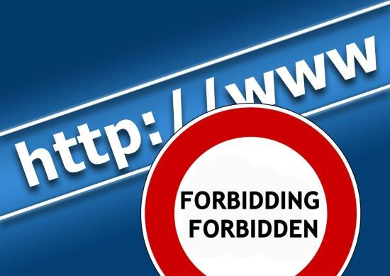

Internet Censorship in North Korea
Internet Access
Who has access to the internet
- High level government officials
- Some Univerties
- Students
- Faculty
Who does not have access to the internet
- Citizens
- Low level government employees
- Visitors
Kwangmyong
The Kwangmyong is an intranet that is controlled by the North Korean government. The Kwangmyong can not be accessed in the homes of many citizens and is extremely limited in the amount of sites that are able to be accessed. Through the Kwangmyong citizens are able to email and instant message under the monitoring and survaillance of the state. All sites and communication networks on the Kwangmyong are strictly domestic. The Kwangmyong prevents North Korean citizens from obtaining access to foreign media via the internet.
What is accessible to those with internet access
Those with internet access are still very limited in what they are able to explore. If a website is not on the Kwangmyong there is not a way to access it within North Korea. The following websites have been banned in North Korea due to the belief that these sites allow the spread of false information:
- Youtube
- South Korean Websites